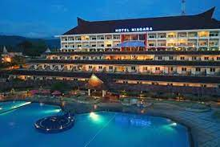
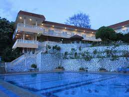
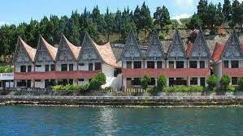
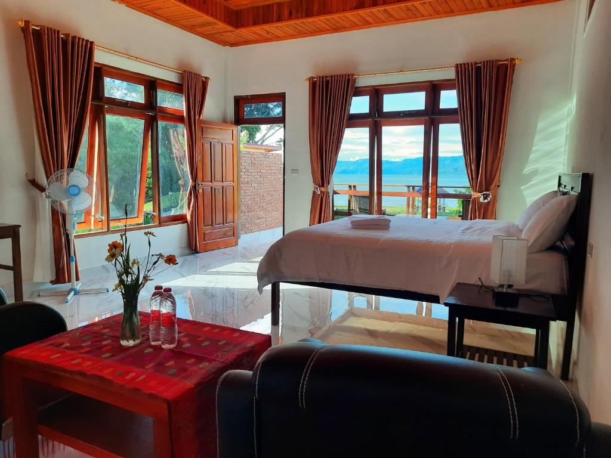
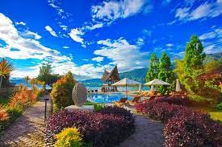
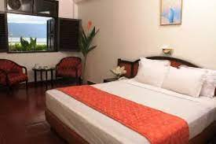
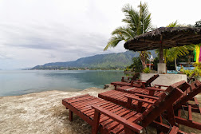

1. Niagara Hotel Lake Toba and Resort
Niagara Hotel Lake Toba & Resort menawarkan kamar-kamar yang menyuguhkan pemandangan Danau Toba dengan akses WiFi berkecepatan tinggi gratis di semua kamar.Terdapat kolam renang luar ruangan, hot tub, dan meja depan 24 jam dengan layanan pramutamu. Kamar yang luas ber-AC dan menghadap pemandangan hijau subur, dilengkapi TV LED, ketel listrik, dan air kemasan gratis. Kamar mandi dilengkapi shower, pemanas air, dan perlengkapan mandi. Beberapa kamar menawarkan balkon pribadi. Terdapat 3 restoran di hotel yang menyajikan masakan lokal dan internasional. Terdapat taman bermain anak-anak dengan berbagai kegiatan, seperti Flying Fox dan memetik buah di rumah kaca hotel. Juga terdapat lapangan tenis, lapangan basket, dan jogging track. Tamu dapat bersepeda mengelilingi hotel menikmati panorama Danau Toba dan Gunung Toba. Pulau Samosir dapat dicapai hanya terletak 2,8 km dari hotel yang dapat dijangkau 30 menit dengan kapal feri. Para tamu juga dapat mengunjungi Panatapan Parapat yang berjarak 6 km dan Taman Eden yang berjarak 16 km.
2.KHAS Parapat
KHAS Parapat adalah resor bintang 3 tepi laut yang menawarkan akses ke pantai pribadi, restoran, dan ruang karaoke. Anda dapat menikmati parkir gratis dan WiFi dapat diakses di area umum. Kamar-kamar ber-AC-nya memiliki balkon, serta dilengkapi dengan minibar, brankas, dan TV kabel layar datar, meja, area tempat duduk, dan fasilitas membuat kopi/teh. Kamar mandi disediakan handuk, sandal, dan perlengkapan mandi gratis. Hotel ini menawarkan 3 pilihan tempat bersantap, yang menyajikan berbagai hidangan internasional dan lokal, selain itu sarapan prasmanan dan layanan kamar juga tersedia. Anda dapat bersantai dan menikmati minuman panas di kedai kopi. Rumah Makan Marina menawarkan makanan Cina, berjarak 2 menit berjalan kaki dari resor. LaToSu Cafe & Resto menyajikan masakan Amerika, berjarak 6 menit berkendara. Layanan meja depan 24 jam, penyewaan mobil, meja layanan wisata, dan fasilitas pertemuan. Anda juga dapat bersantai di teras, berjalan-jalan di taman, dan menggunakan fasilitas barbekyu.Dekat dengan Batu Gantung dan Bukit Senyum, Danau Toba Parapat dan Bandara Internasional Silangit.

3. Parapat View Hotel
The Parapat View Hotel menawarkan pemandangan danau, taman, dan restoran. Setelah seharian berjalan-jalan, para tamu dapat bersantai di kolam renang luar ruangan properti. WiFi tersedia gratis di area umum.Kamar dilengkapi dengan meja dan TV layar datar. Air kemasan gratis. Kamar mandi dalam tersedia shower, handuk, dan perlengkapan mandi gratis. Beberapa kamar memiliki balkon, meja, dan area tempat duduk. Sarapan sudah termasuk di semua kamar. Sarapan prasmanan menawarkan roti dan makanan Indonesia. Anda dapat menikmati minuman dan pemandangan matahari terbenam di bar tepi kolam renang. Hotel ini memiliki meja depan 24 jam dengan layanan parkir dan laundry di lokasi. Properti ini menyediakan layanan pramutamu untuk membantu Anda dengan tiket dan informasi tentang acara dan hiburan lokal.Dekat dengan bukit senyum, Batu Gantung dan Bandara Internasional Silangit. Transfer bandara tersedia dengan biaya tambahan. Nikmati liburan Anda dengan orang terkasih bersama dengan Parapat View Hotel.

4.Danau Toba International Cottage Parapat
Danau Toba International Cottage Parapat Pelayanan memuaskan serta fasilitas hotel yang memadai akan membuat Anda nyaman berada di Danau Toba International Cottage Parapat. Tersedia kolam renang. Manjakan diri Anda dengan spa yang memberikan harga dan kualitas pelayanan terbaik. Resepsionis siap 24 jam untuk melayani kebutuhan Anda. Jangan ragu untuk menghubungi resepsionis, kami siap melayani Anda. Terdapat restoran yang menyajikan menu lezat ala Danau Toba International Cottage Parapat khusus untuk Anda. WiFi tersedia di seluruh area publik properti untuk membantu Anda tetap terhubung dengan keluarga dan teman.

5.Juma cottage
Juma cottage adalah sebuah guest house ramah lingkungan yang terletak di Tuk Tuk, dan memiliki taman. Terdapat restoran di tempat dan parkir pribadi gratis. Di guest house, unit-unitnya dilengkapi dengan balkon. Unit-unitnya dilengkapi dengan kamar mandi pribadi dan teko, sementara beberapa kamar dilengkapi dengan teras dan yang lainnya juga memiliki pemandangan pegunungan.Bandara terdekat adalah Bandara Internasional Sisingamangaraja XII, 130 km dari guest house. Nikmati liburan Anda dengan orang tercinta bersama Juma Cottages yang memberikan Anda pelayanan yang terbaik untuk Anda dan orang tercinta.

6.Tabo Cottages Tuktuk Lake Toba
Tabo Cottages adalah hotel yang natural dengan pekarangan hijau yang luas dan kamar sebahagian dari bahan daur ulang dari rumah tradisional. Terdapat pondok untuk santai dan menikmati pemandangan danau dan gunung, Restoran dan bakery jerman . Makanan spesial adalah prasmanan dengan khas lokal dan barat. Kopi adalah salah satu produk yang sangat kami banggakan karena kami memanggang biji kopi lokal sendiri, maka kopi di Tabo sangat segar dan harum. Sering juga kami adakan aksi linkungan bersama tamu2 dan coba memperbaiki linkungan dan fasilitas seperti jalur treking secara relawan.
7. Bobocabin Signature Toba
Bobocabin Signature Toba, Medan menawarkan akomodasi di Parmonangan. Resor ini menawarkan pemandangan danau, teras, resepsionis 24 jam, dan Wi-Fi gratis. Setiap kamar di resor ini dilengkapi dengan meja. Kamar-kamarnya memiliki kamar mandi pribadi dengan bidet, perlengkapan mandi gratis, dan pengering rambut. Di Bobocabin Signature Toba, Medan, setiap kamar memiliki area tempat duduk. Nikmati liburang Anda dengan orang terkasih bersama Bobobcabin Signature Toba.

8. Star Beach Hotel
Starbeach Hotel terletak tepat di sebelah Danau Toba dengan pemandangan fantastis yang akan memanjakan mata pelanggan kami. Tak hanya menikmati pemandangan, pelanggan kami juga diperbolehkan merasakan kesegaran air Danau Toba tepat di depan hotel. Kami juga menyediakan penyewaan jetski dan perahu kepada pelanggan kami agar liburan mereka lebih menyenangkan.Liburan Anda dengan orang terkasih akan menyenangkan.
